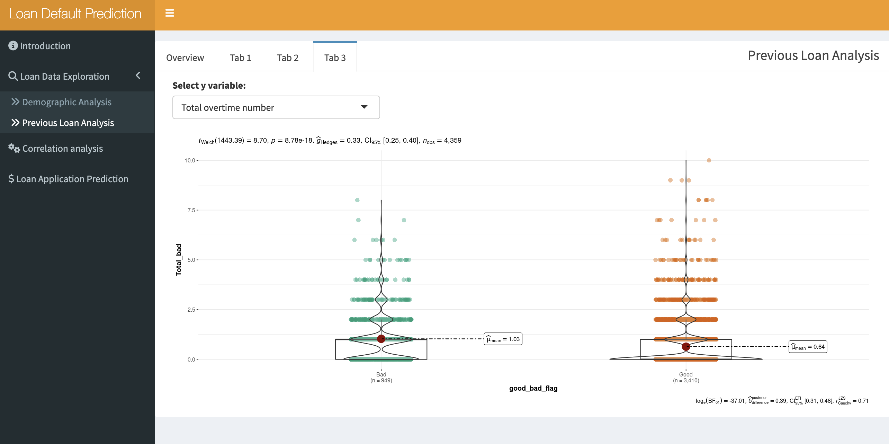

Our App
To access our shinyapp, please visit the following URL: https://vaagroup12.shinyapps.io/R_shiny_Group12/
User Guide – A Loan Prediction Challenge
1. IntroductionPage
On this page, there is a short description of the application and an overview of the application navigation.
2. ExploratoryDataAnalysis(EDA)
Across each tab, there is a sub tab that gives instructions on how to the user can interact with the visualization.
2.1. Loan Data Exploration
2.1.1Demographic Analysis
[1] Select the demographic factor input that you wish to visualise.
[2] Select the y-axis that you wish to visualise into the violin graph.
[3] Select the y-exis variable button to ensure that y-axis selections are applied.
Above is acombination with different input factors, users can have an overview of demographic distribution.
2.1.2 Previous Loan Analysis
The previous loan analysis has 4 tabs: Overview, tab1, tab2, tab3. Each has its own function.
[1]In tab1,you can explore the distribution of the amount of the repay status within different age group which is showed in the way of scatter plot.
[2]The graph below showed the ratio of different employment of customers.
[1]In tab2,you can explore the distribution of the amount of the customers with different employment status which is showed in the way of bar chart.

[1]In tab3,you can explore the distribution of the amount of the repay status within different age group which is showed in the way of scatter plot.
[2]The graph below showed the ratio of different employment of customers.
3. Correlation Analysis:
4. Loan Application Prediction :
[1]In Loan Application Prediction tab ,users could input the following information :loan amount, termdays, previous total loan amount, employment to predict the loan repay status from the sliderpanel or selectpanel;
The prediction result will be labled in right side.
[2]The prediction results are based on logistic regression machine learning model.